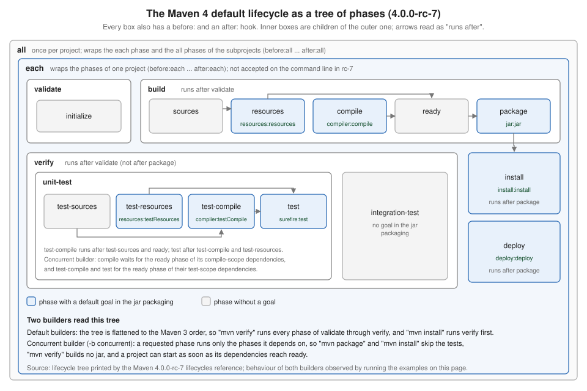
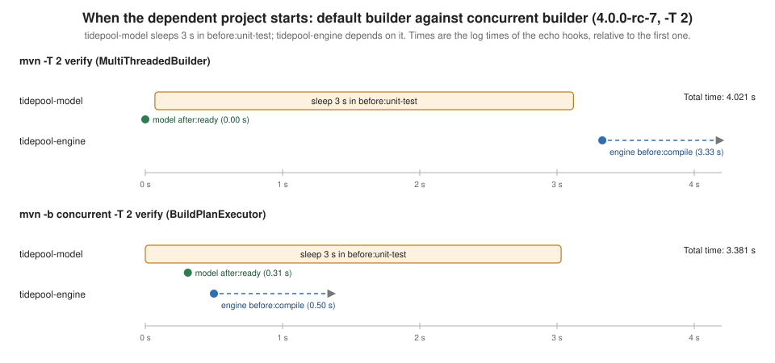

Maven 4: Lifecycle
|
This content was generated with the assistance of AI and should be verified against the official documentation before being relied on in production. |
This page goes deep on one part of Apache Maven 4: the lifecycle. Maven 4.0.0-rc-7 is a release candidate, not a final release, so
everything below describes that candidate and can still change before 4.0.0. The overview of the whole release is on
Maven 4: What’s New, the Maven 3 lifecycle (the three lifecycles, the
phases, the bindings per packaging, default-* execution ids) is on
Maven Build Lifecycle, and the move of a real project is on
Migrating to Maven 4. Those pages are not repeated here. This one explains what
they only mention: the tree, the hooks, the order of executions inside a phase and the concurrent builder.
All examples were run on 2026-10-16 with Maven 4.0.0-rc-7 on JDK 26 (the parallel experiment was repeated on JDK 17.0.14, the minimum Java for Maven 4) and, for
the contrast, with Maven 3.10.0 (and 3.9.16 where stated). They use small scratch projects named after the tidepool project of this section and a scratch local
repository, so nothing touched ~/.m2. Paths were shortened to /work/..., and the lines
Loaded N auto-discovered prefixes ... that rc-7 prints on the first request to each repository were removed. Whenever output was filtered, the text says how.
How the lifecycle was observed
Phases are invisible unless something is bound to them, so every experiment uses the same probe: the Maven Antrun plugin (3.2.0) with one <echo> execution
bound to a phase. A probe project binds three executions to each of the 19 phase names of the Maven 4 default lifecycle (before:X, X and after:X), 57 in all,
and prints their execution ids and the goals of the real plugins in the order they ran. Two of the 57:
<execution>
<id>b-compile</id>
<phase>before:compile</phase>
<goals><goal>run</goal></goals>
<configuration><target><echo level="info" message="before:compile"/></target></configuration>
</execution>
<execution>
<id>a-compile</id>
<phase>after:compile</phase>
<goals><goal>run</goal></goals>
<configuration><target><echo level="info" message="after:compile"/></target></configuration>
</execution>In the traces below an id starting with b- is the before: hook of the phase that follows, m- is an execution bound to the phase itself and a- is the after:
hook; resources:resources, compiler:compile and the like are the default goals of the jar packaging. The traces keep only the
--- plugin:goal (execution-id) @ project --- lines of the build log (reduced to the id) and are wrapped by hand. The probe project is this page’s own lab setup, not an example from the Maven documentation.
From a flat list to a tree
Maven 3 defines the default lifecycle as one ordered list of phases, from validate to deploy. The unknown-phase error of Maven 3.10.0 prints it:
$ mvn nonesuch
[ERROR] Unknown lifecycle phase "nonesuch". Available lifecycle phases are: pre-clean, clean, post-clean, validate, initialize, generate-sources, process-sources, generate-resources, process-resources, compile, process-classes, generate-test-sources, process-test-sources, generate-test-resources, process-test-resources, test-compile, process-test-classes, test, prepare-package, package, pre-integration-test, integration-test, post-integration-test, verify, install, deploy, pre-site, site, post-site, site-deploy. -> [Help 1](A sentence of the message was left out.) Maven 4.0.0-rc-7 keeps a list for the command line, but a different one, and the lifecycle behind it is a tree. The same
error, provoked with the phase name each:
$ mvn each
[ERROR] Unknown lifecycle phase "each". Available lifecycle phases are: before:clean, clean, after:clean, before:all, before:initialize, before:validate, validate, after:validate, initialize, after:initialize, before:build, before:sources, sources, after:sources, before:resources, resources, after:resources, before:compile, compile, after:compile, before:ready, ready, after:ready, before:test-sources, test-sources, after:test-sources, before:test-resources, test-resources, after:test-resources, before:test-compile, test-compile, after:test-compile, before:test, test, after:test, before:unit-test, unit-test, after:unit-test, before:package, package, after:package, build, after:build, before:verify, before:integration-test, integration-test, after:integration-test, verify, after:verify, before:install, install, after:install, before:deploy, deploy, after:deploy, all, after:all, before:site, site, after:site, before:site-deploy, site-deploy, after:site-deploy. -> [Help 1]Three things stand out in that list. Every phase has a before: and an after: form, the old generate-sources, process-resources, prepare-package and
friends are gone from it (they still work, as the section on aliases shows) and each is not a phase you can type in rc-7, although all is. The Lifecycles
Reference of rc-7 prints the tree itself, from which the table below is taken (the goals are those of the jar packaging, run in the first section).
| Phase | Child of | Runs after | Default jar goal |
|---|---|---|---|
|
(root) |
its |
none |
|
|
(wraps the phases below) |
none |
|
|
none |
none; |
|
|
|
none |
|
|
none |
|
|
|
|
|
|
|
|
none |
|
|
|
|
|
|
|
none |
|
|
none |
none |
|
|
none |
|
|
|
|
|
|
|
|
|
|
|
none |
none |
|
|
|
|

Two details of the tree deserve emphasis. A ready phase exists because most of what a dependent project needs from a dependency is its compiled classes and
resources, not its finished jar, so a dependent can start at ready. And verify runs after validate only: the tree does not say that verification must wait for
packaging, which is the difference the concurrent builder makes visible later on this page. The maven-core reference page lists the same tree, including the clean and site lifecycles
(site-deploy runs after site).
Before and after hooks
Every phase now has a before: and an after: phase to bind to. The probe project (57 executions) was run with mvn verify. Maven 3.10.0, given a POM that is
the same except for model version 4.0.0, ran 8 of the 57 and said nothing about the other 49:
$ mvn verify
m-validate m-initialize resources:resources compiler:compile m-compile resources:testResources
compiler:testCompile m-test-compile surefire:test m-test jar:jar m-package m-integration-test
m-verifyOnly the executions bound to phases that already exist in Maven 3 ran: validate, initialize, compile, test-compile, test, package, integration-test and
verify. An execution bound to before:compile or sources is never bound and the build still ends with BUILD SUCCESS, with no warning. Maven 3.9.16 ran the same 8. Maven 4.0.0-rc-7 ran 47 of the
57 (the 10 missing are the each hooks, all, and the install and deploy ones, which verify does not reach):
$ mvn verify
b-all b-initialize b-validate m-validate a-validate m-initialize a-initialize b-build b-sources
m-sources a-sources b-resources m-resources resources:resources a-resources b-compile
compiler:compile m-compile a-compile b-ready m-ready a-ready b-test-sources m-test-sources
a-test-sources b-test-resources m-test-resources resources:testResources a-test-resources
b-test-compile compiler:testCompile m-test-compile a-test-compile b-test surefire:test m-test
a-test b-unit-test m-unit-test a-unit-test b-package jar:jar m-package a-package m-build a-build
b-verify b-integration-test m-integration-test a-integration-test m-verify a-verify a-allWhat this trace shows:
-
The Maven 3 order is kept. Resources, compile, test resources, test compile, test, jar:
verifystill builds the jar beforeverifyends, so the default builder behaves like Maven 3, as the release notes promise. -
Each phase is wrapped.
b-compile, thencompiler:compile, thenm-compile, thena-compile: an execution bound to the bare phase name ran after the default goals of that phase, exactly as in Maven 3, and theafter:hook came last. -
Parents wrap children.
validatehas the childinitialize, and the output order ism-validate a-validate m-initialize a-initialize. In this build the hookb-initializeprinted beforeb-validate. The phases of the tree are walked in the order the list above gives, and the list putsbefore:initializefirst. Do not depend on the relative order of abefore:hook of a child and of its parent. -
after:hooks of the ancestors run.a-buildran afterm-buildand the last line,a-all, closed the whole build. The execution bound to the bare phaseall(m-all) never ran, and neither did anything bound toeach. -
The hooks of
integration-testrun although the jar has no goal there. An empty phase still fires its hooks.
Running a hook as the goal of the command line behaves like running the phase itself. mvn before:compile, mvn after:compile and mvn compile produced the same trace in this project, all
the way to a-build and a-all, including the compiler goal. The same holds for mvn prepare-package (an alias, see below) and mvn before:package: both run the jar goal. Maven 3.10.0
stops prepare-package before jar:jar; in Maven 4 the default builder does not, because the hook always comes with its phase.
This is the behaviour change that the overview page calls "phase execution scope": the after: hook of a phase you reach always runs, so a plugin bound to post-clean
runs on mvn clean.
Ordering executions inside a phase
Several executions can be bound to the same phase, and in Maven 3 they run in the order the plugins and executions are declared in the POM. Maven 4 lets you add an integer in square brackets to the
phase name, a priority. The experiment binds ten executions of the Antrun plugin to compile and its hooks, in a scrambled order in the POM (the execution ids e1 to e10 are their declaration order):
<execution><id>e1</id><phase>compile</phase>...</execution>
<execution><id>e2</id><phase>compile[200]</phase>...</execution>
<execution><id>e3</id><phase>compile[50]</phase>...</execution>
<execution><id>e4</id><phase>before:compile</phase>...</execution>
<execution><id>e5</id><phase>before:compile[10]</phase>...</execution>
<execution><id>e6</id><phase>after:compile[5]</phase>...</execution>
<execution><id>e7</id><phase>after:compile</phase>...</execution>
<execution><id>e8</id><phase>after:compile[-5]</phase>...</execution>
<execution><id>e9</id><phase>after:compile[100]</phase>...</execution>
<execution><id>e10</id><phase>after:compile[1]</phase>...</execution>Each execution echoes its id and phase. mvn compile on rc-7 printed (the (compiler:compile) line stands for the log line of the compiler goal):
e4 before:compile
e5 before:compile[10]
(compiler:compile)
e1 compile
e3 compile[50]
e2 compile[200]
e8 after:compile[-5]
e7 after:compile
e10 after:compile[1]
e6 after:compile[5]
e9 after:compile[100]The rules the output demonstrates:
-
Within one phase, executions run in ascending order of the number, and negative numbers are allowed.
-
An execution without a number counts as 0:
e7(no number) ran between-5and1, ande4ran beforee5, which has10. -
Among the executions with the same number, the declaration order decides, as it did in Maven 3. The default goal of the packaging (
compiler:compile) ran beforee1in the phasecompile, because the lifecycle bindings come first. -
The numbers only order executions of the same phase. They never move an execution to another phase.
The Maven 4 plugin descriptor META-INF/maven/lifecycle.xml (used by plugins that define their own lifecycle) has the same concept under another name: a <phase> element takes an executionPoint
attribute (such as before or after, which decorates the phase named by <id>) and a priority, an integer whose default is 0. That default matches the unnumbered executions above.
Maven 3.10.0 and 3.9.16 do not know the syntax: running the same project on both printed only e1 compile after the compiler goal, so the other nine executions, the numbered ones and the hooks, were never
bound and the build still succeeded. The overview page measured the same for validate[200], so do not use a bracketed phase in a POM that must still build with Maven 3. Section The concurrent builder adds that the concurrent builder of rc-7 also ignores the numbered executions.
The old pre-* and post-* names are aliases
Maven 3 had a few phases named pre-* and post-* and many with the generate-*, process-* and prepare-package names. In Maven 4 they survive as aliases of tree phases, and the
release notes warn against binding to them. To see which phase each alias maps to, a probe project bound one execution to each old name and one to its target, and ran mvn verify. Each pair
fired back to back, which gave this table (for the clean and site lifecycles the pairs are pre-clean with before:clean, post-clean with after:clean, pre-site with before:site and
post-site with after:site):
| Maven 3 name | Maven 4 phase it runs in | Observed position in mvn verify |
|---|---|---|
|
|
before |
|
|
right after |
|
|
before |
|
|
right after |
|
|
right after |
|
|
after the compile goal, before |
|
|
right after |
|
|
before |
|
|
right after |
|
|
right after |
|
|
right before |
|
|
after |
|
|
right after |
The experiment’s trace, reduced to the old and new names and the real goals (each pair appeared in this order):
old generate-sources, new sources, old process-sources, new after:sources
old generate-resources, new resources, resources:resources, old process-resources, new after:resources
compiler:compile, old process-classes, new after:compile
old generate-test-sources, new test-sources, old process-test-sources, new after:test-sources
old generate-test-resources, new test-resources, old process-test-resources, new after:test-resources
old process-test-classes, new after:test-compile, old prepare-package, new before:package
jar:jar, old pre-integration-test, new before:integration-test, old post-integration-test, new after:integration-testThe command line accepts the same aliases: mvn process-classes ran resources:resources and compiler:compile, like mvn after:compile. The warning of the official article applies to the
post-* names above all: a plugin bound to process-resources, because there is no pre-compile, is really bound to after:resources, which may not be what its author meant.
For the migration step that replaces the names, with mvnup, see
Migrating to Maven 4; the migration guide lists the replacement of pre-integration-test and post-integration-test with
before:integration-test and after:integration-test as a required change of step 2.
The concurrent builder
The tree only changes how a build runs when you ask for it. Maven picks a builder, the strategy that walks the reactor and the phases, and rc-7 has three. -b or --builder selects
one by id (the option text is the same in Maven 3.10.0 and rc-7: "The id of the build strategy to use"):
| Id | Maven 3.10.0 | Maven 4.0.0-rc-7 |
|---|---|---|
|
used without |
used without |
|
selected by |
selected by |
|
unknown |
opt-in; its log line is |
An unknown id fails at once. Maven 3.10.0 for -b concurrent and rc-7 for -b nonesuch:
[ERROR] The builder requested using id = concurrent cannot be found -> [Help 1]
[ERROR] The builder requested using id = nonesuch cannot be found -> [Help 1]The concurrent builder is the only one that plans the build from the tree. It computes, for the phase you requested, the phases that it depends on, in all the
projects, and runs whatever is ready. Everything that follows on this page about "concurrent" is that builder; the flag does nothing else.
What a requested phase includes
With the default builder, mvn package runs everything from validate to package. With the concurrent builder it runs the phase and the phases it depends on in the tree. The real goals
of the jar packaging that each command ran in the single-project probe, with both builders (mvn <phase> and mvn -b concurrent <phase>):
| Command | Default builder | -b concurrent |
|---|---|---|
|
|
|
|
|
|
|
|
|
|
|
|
|
|
|
|
all of the above, then |
|
|
all of the above, then |
|
The right column follows from the tree and is not what a Maven 3 user expects:
-
compileruns noresources:resources, becausecompileruns aftersources, not afterresources;readyis the phase that waits for both. -
packageandinstallrun no tests, becausepackageruns afterreadyand the tests are underverify. -
verifyruns the tests but builds no jar, anddeploydeploys without installing first. -
integration-testalone ran no goal at all in this project.
The default builder keeps the Maven 3 behaviour, including mvn install after verify and mvn deploy running install first. A trace of the probe project, default builder, mvn install ended with
b-install install:install m-install a-install a-all. The concurrent trace of the same command (the order can differ between runs when more than one thread works, but this was the trace of a run):
$ mvn -b concurrent install
b-all b-each b-validate b-initialize m-validate m-initialize a-initialize a-validate b-build
b-resources b-sources m-resources m-sources resources:resources a-resources a-sources b-compile
compiler:compile m-compile a-compile b-ready m-ready a-ready b-package jar:jar m-package a-package
b-install a-build install:install m-install a-install a-each a-allHere b-each and a-each run, and so do the parent hooks m-validate m-initialize a-initialize a-validate, properly nested: the concurrent builder follows the tree exactly where the default builder follows
the flattened list.
Where a dependent project can start
The tree lets a project start once the phase it needs from a dependency is done. The experiment: tidepool-engine depends on tidepool-model, and tidepool-model sleeps 3 s in before:unit-test,
with echo hooks that print the time. The default multithreaded builder and the concurrent builder were run with two threads. The echo lines are all the output of the experiment that was kept:
$ mvn -T 2 verify
[INFO] Using the MultiThreadedBuilder implementation with a thread count of 2
40.093 model: after:ready
40.162 model: before:unit-test (sleeping 3 s)
43.208 model: after:unit-test
43.420 engine: before:compile
[INFO] BUILD SUCCESS
[INFO] Total time: 4.021 s (Wall Clock)
$ mvn -b concurrent -T 2 verify
[INFO] Using the BuildPlanExecutor implementation with a thread count of 2
44.393 model: before:unit-test (sleeping 3 s)
44.703 model: after:ready
44.892 engine: before:compile
47.425 model: after:unit-test
[INFO] BUILD SUCCESS
[INFO] Total time: 3.381 s (Wall Clock)The default builder starts the engine 3.33 s after the model reached ready, because it waits for the whole verify of the model, the 3 s sleep included. The concurrent builder starts it 0.2 s after
ready and the compile of the engine overlaps the model’s tests. A project with long tests and many dependents gains most. Repeating the concurrent run on JDK 17.0.14 gave the same shape.

The thread count matters. Without -T, -b concurrent ran the same project with one thread: after:ready printed only after the sleep, and the engine started as soon as it ended (3.9 s in all). So pass
-T (a count such as -T 4 or -T 1C) when you choose the concurrent builder, as with the default one; see
Build Performance: Cache, Parallel Builds & mvnd.
The all and each phases across subprojects
all and each exist for builds with subprojects (see
Multi-Module Builds & the Reactor): the parent tidepool-parent has the subprojects tidepool-model and tidepool-engine,
and each of the three has probes on all, each, compile and package. The lines below keep only the all and each hooks of mvn compile (the project name is in the echo message):
$ mvn compile
parent before:all;parent after:all;model before:all;model after:all;engine before:all;engine after:all;
$ mvn -b concurrent -T 1 compile
parent before:all;parent before:each;model before:all;model before:each;parent after:each;engine before:all;
engine before:each;model after:each;model after:all;engine after:each;engine after:all;parent after:all;With the default builder every project runs its own all hooks, one project after the other, and each is not run at all. With the concurrent builder, the documented model shows up: the before:all of
the parent comes first, the after:all of the parent comes last, after the all hooks of the subprojects, and the each hooks wrap the phases of one project. So "run this once before everything" and "run this once after everything" are
before:all and after:all of the root project, but only with the concurrent builder. With the default builder, use a goal of the root project that you invoke yourself, or the hooks of the root as a per-project step.
The same command gave the same order on two runs with -T 1; with more threads the lines of different projects interleave.
Other behaviours of the concurrent builder in rc-7
These were each observed on rc-7, and some look like gaps of the release candidate rather than design; they are listed so that a trial does not surprise you.
-
Only the first phase of a lifecycle is honoured.
mvn -b concurrent verify installran whatverifyruns;mvn -b concurrent install verifyran whatinstallruns;package compileranpackage. Acleanbefore it is a separate lifecycle and is honoured:mvn -b concurrent clean package installcleaned and packaged but did not install. Run one build per phase. -
Goals given on the command line are not ordered after the phases.
mvn -b concurrent compile jar:jarranjar:jarbeforecompiler:compile. -
Numbered executions are skipped. In the ordering experiment,
mvn -b concurrent compileprintede4 before:compile, the compiler,e1 compileande7 after:compile, and none of the seven executions with a number in brackets. -
after:hooks run after a failure. With a source file that does not compile, the default builder stopped atcompiler:compileand printed no hook after it; the concurrent builder ended witha-compile a-build a-each a-all:$ mvn compile b-all b-initialize b-validate m-validate a-validate m-initialize a-initialize b-build b-sources m-sources a-sources b-resources m-resources resources:resources a-resources b-compile compiler:compile [ERROR] BUILD FAILURE $ mvn -b concurrent compile b-all b-each b-validate b-initialize m-validate m-initialize a-initialize a-validate b-build b-sources m-sources a-sources b-compile compiler:compile a-compile a-build a-each a-all [ERROR] BUILD FAILUREThat is useful for cleanup hooks (an
after:allthat stops a test server), and a reason to write them so that they cope with a build that stopped halfway. The execution bound tocompileitself did not run after the failed compiler goal; only theafter:hooks did. -
Everything else about the experiment stayed correct. The build result, the reactor summary and the inter-project classpath were right: in the two-subproject build
mvn -b concurrent verifycompiledtidepool-engineagainst the classes oftidepool-modelalthough neither jar was built, becauseverifydoes not runpackage.
The section Practical advice below turns this into a policy. The release notes and the overview page say the same in a sentence: treat -b concurrent as an experiment in the release candidate, compare
the goals it ran with the default builder’s before relying on it, and keep it out of your release job until Maven 4.0.0 is final.
Practical advice
-
Use
before:andafter:instead of the old names for every new binding, and convert existing ones with the Maven upgrade tool (mvnup) once the build works on Maven 4; the overview page shows it rewritingpost-cleantoafter:clean. -
A POM that must still build with Maven 3 should not use the new phase names at all. Maven 3.10.0 and 3.9.16 drop an execution bound to
before:compile,after:compile[200],sources,readyorallsilently, withBUILD SUCCESS; so a quality gate bound there would just disappear. The only safe bindings for both are the Maven 3 names that also exist in the tree:validate,initialize,compile,test-compile,test,package,integration-test,verify,installanddeploy. -
Check your
post-*bindings. On Maven 4 they run when you build up to the main phase; see the behaviour change above. -
Prefer the default builder for a release job. It keeps the Maven 3 behaviour, and the three surprises of the concurrent builder (no tests with
packageandinstall, no jar withverify, one phase per lifecycle) are the kind of thing a release pipeline cannot absorb. -
Try the concurrent builder in a CI job that runs
-T 1C verify, compare its goal list with the default builder’s (thehelp:describegoal of rc-7 is not tree-aware, as the Maven Build Lifecycle page shows, so read the build log) and watch the time of projects whose dependents wait on long tests. -
Use the
eachandallhooks for tasks tied to a project or to the whole build (starting a test container before everything, stopping it after everything), knowing that the once-per-build meaning needs the concurrent builder in rc-7.
Equivalents in Ant and Gradle
| Maven 4 | Ant | Gradle |
|---|---|---|
|
Nothing built in; put the step first or last in the target, or add a target that the original |
|
|
The order of the tasks inside a target. |
|
|
No notion; a |
Lifecycle tasks of the root project, |
Concurrent builder and |
Not available; targets run one after the other in one thread. |
A task graph executed in parallel with |
The Ant model is on Ant Targets & Extension Points and the Gradle one on Gradle Build Lifecycle.